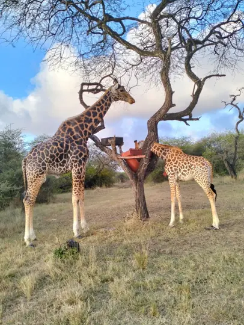
File:Giraffes at the Nguuni Nature Sanctuary in Mombasa.jpg
Giraffes at the Nguuni Nature Sanctuary in Mombasa

Giraffes at the Nguuni Nature Sanctuary in Mombasa
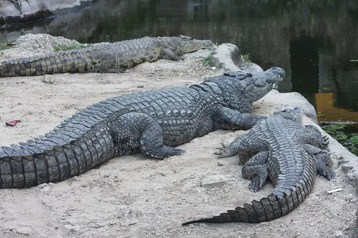
This is an image of "African people at work" from
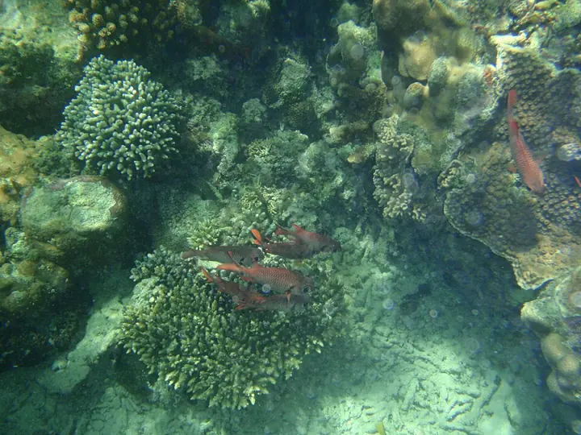
Snorkeling at Kisite-Mpunguti Marine National Park
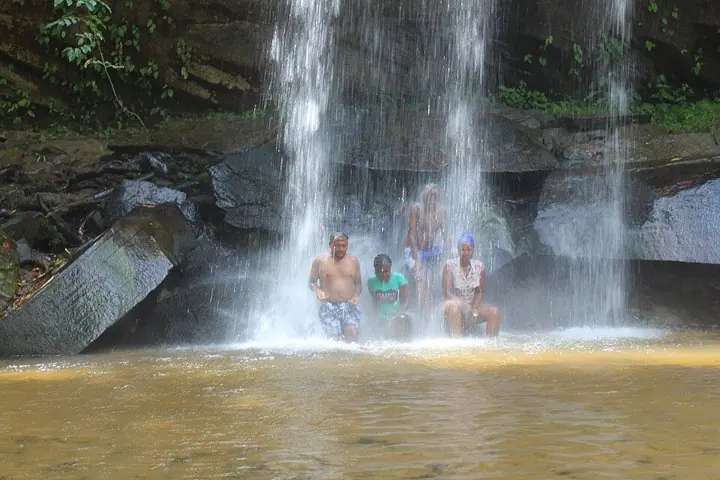
besides it known as a game drive destination, shimba hills is blessed with a beautiful waterfal
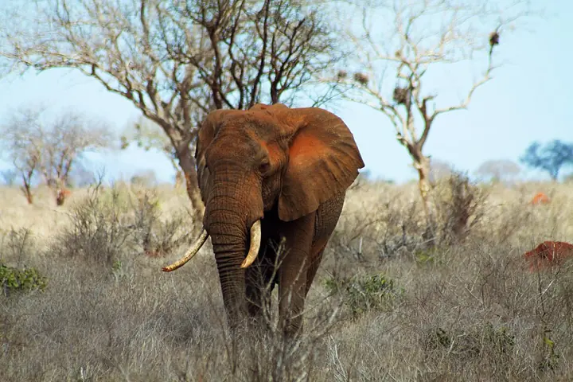
<p>The elephants are Tsavo East are red from the local mud they like to apply over themselves. </p> A day safari in the large and less developed Tsavo East National Park in eastern Kenya.
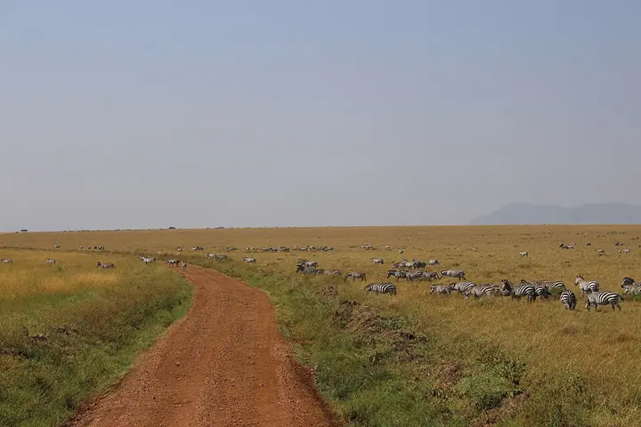
Migration of zebras (Equus quagga boehmi) in Maasai Mara
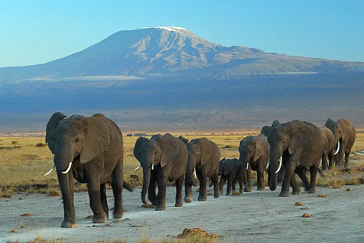
Elephants at <a href="https://en.wikipedia.org/wiki/Amboseli_National_Park" class="extiw" title="en:Amboseli National Park">Amboseli National Park</a> against <a href="https://en.wikipedia.org/wiki/Mount_Kilimanjaro" class="extiw" title="en:Mount Kilimanjaro">Mount Kilimanjaro</a>
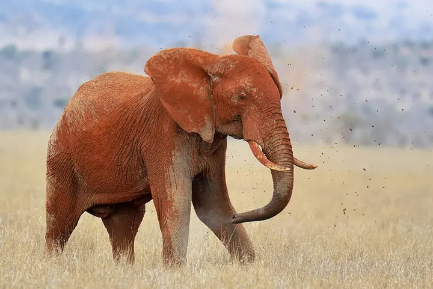
Red elephant in Tsavo East National Park
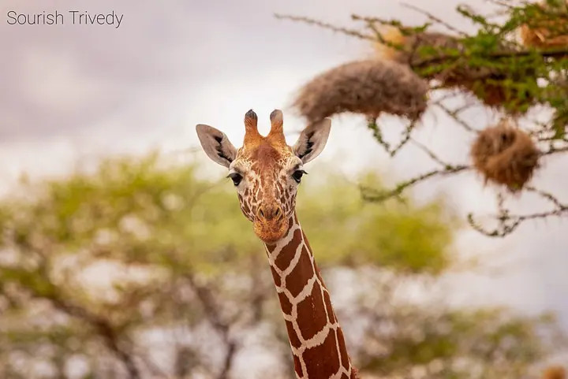
In samburu, I stumbled upon this magnificent creature known as the Reticulated Giraffe. It is found in Samburu and is quite different from other giraffes. The lines are more defined and the spaces are less uneven but more symmetrical in a way.
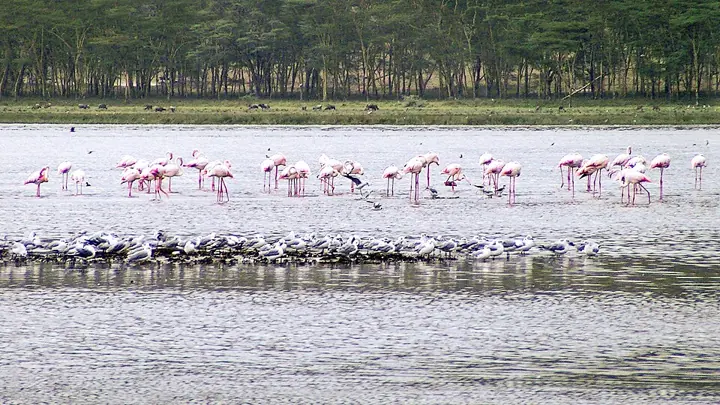
This is a picture of the famous beauty,THEE FLAMINGOES, that distinguishes Lake Nakuru from other lakes in Kenya,This was taken during the christmass season.
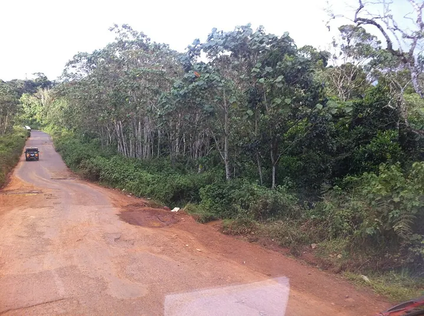
Abadare Forest taking its root on the highway
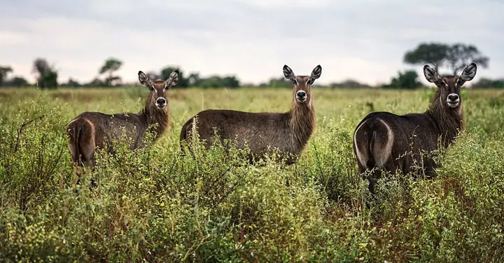
Wildlife, Meru National Park
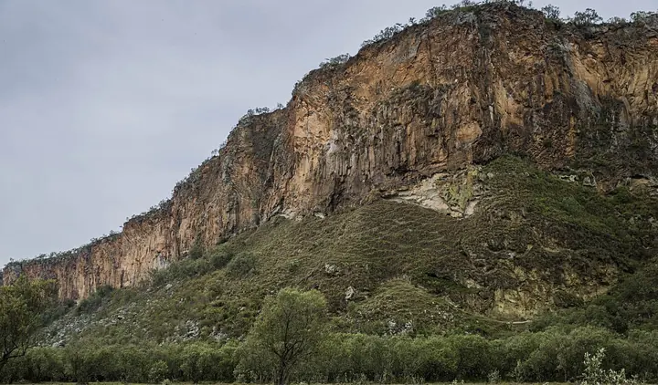
<p>Hell's Gate National Park, Naivasha, Kenya. </p><p>Do you remember the film The Lion King? </p> The main setting of the 1994 film The Lion King is heavily modelled after the park, where several lead crew members went to study and gain an appreciation of the environment for the film.
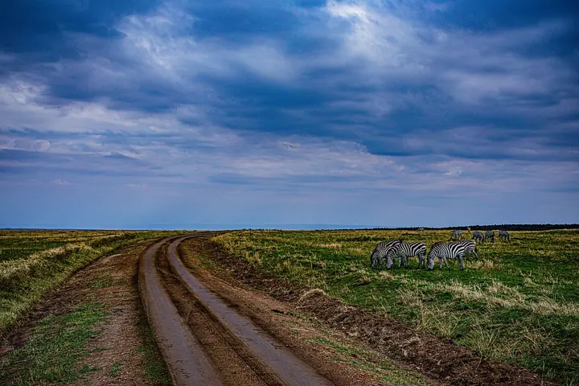
Zebras Grazing Grassland Savannah Wilderness In Maasai Mara National Game Reserve Park Narok County Kenya East Africa Great Rift Valley
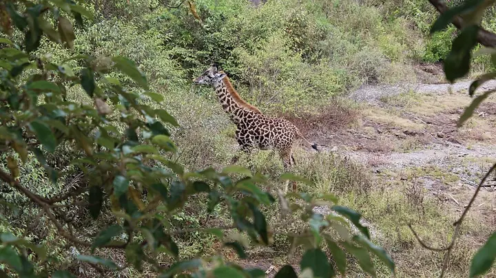
Image of a giraffe at the Nairobi National Park
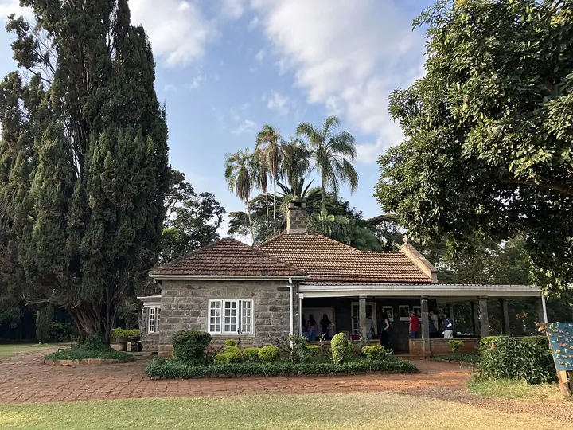
Karen Blixen Museum
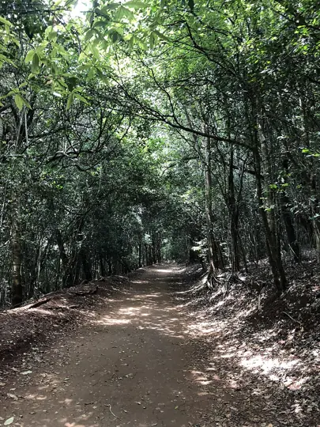
All images here are of Karura Forest in Nairobi, Kenya. The photos portray a vast forest area comprising of a variety of Plant species- mainly trees like Olea europaea (var. africana), Croton megalocarpus and many more and a lot of grasses and thickets. <p>The photos also portray the beautiful waterfall within the forest and the nature trail where civilians are allowed to walk through as you'll note- some individuals captured in the photos. </p><p>Some of the photos capture the rules put in place by the Forest Management like one to avoid entry towards the Waterfall- which usually gets crowded in a bid to curb the ongoing spread of the highly infectious Corona Virus disease. </p><p>The photo gallery size in totality is about 209MBs but each individual photo is just about 4MBs for the smaller sized ones and about 9MBs for the larger sized ones. The photo format for the images is JPG. All images shared here are captured on an iPhone 8 with a 12-megapixel rear-facing camera. </p><p>Geographical coordinates for Karura Forest are: DMS 1° 14′ 25″ S, 36° 49′ 25″ E Decimal -1.240278, 36.823611 </p> <pre>Geo URI <a rel="nofollow" class="external free" href="geo:-1.240278,36.823611">geo:-1.240278,36.823611</a> </pre> <p>UTM 37M 257820 9862812 </p> Date photos were taken: 30th July 2019
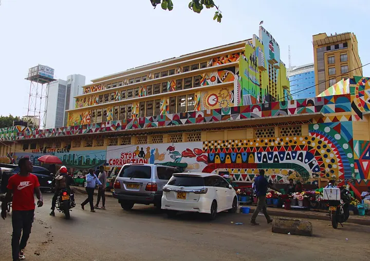
The exterior of Nairobi's City Market in Kenya, a historic marketplace.
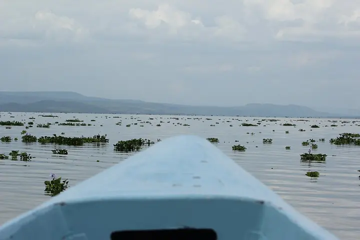
It is mostly tourists travelling by boat on lake Naivasha, if they wish to see the plentiful water birds and hippos up close, or cross over from the shore to Crescent Island, a semi-island on the lake that is home to wildlife. The small motor boats seat up to 7 people and can be hired from campsites and resorts along the shore.
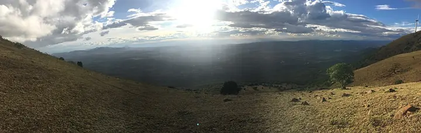
Midday at the Ngong Hills after rains
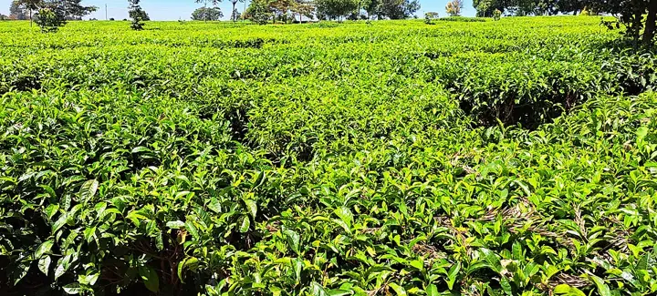
Tea leaves in a farm in Kenya
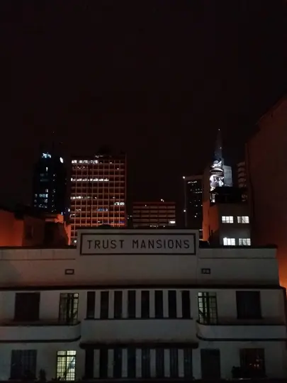
This is an image of Cultural Fashion or Adornment from
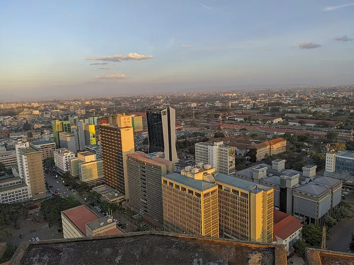
This is an image with the theme "<i>Rites and Rituals</i>" from: